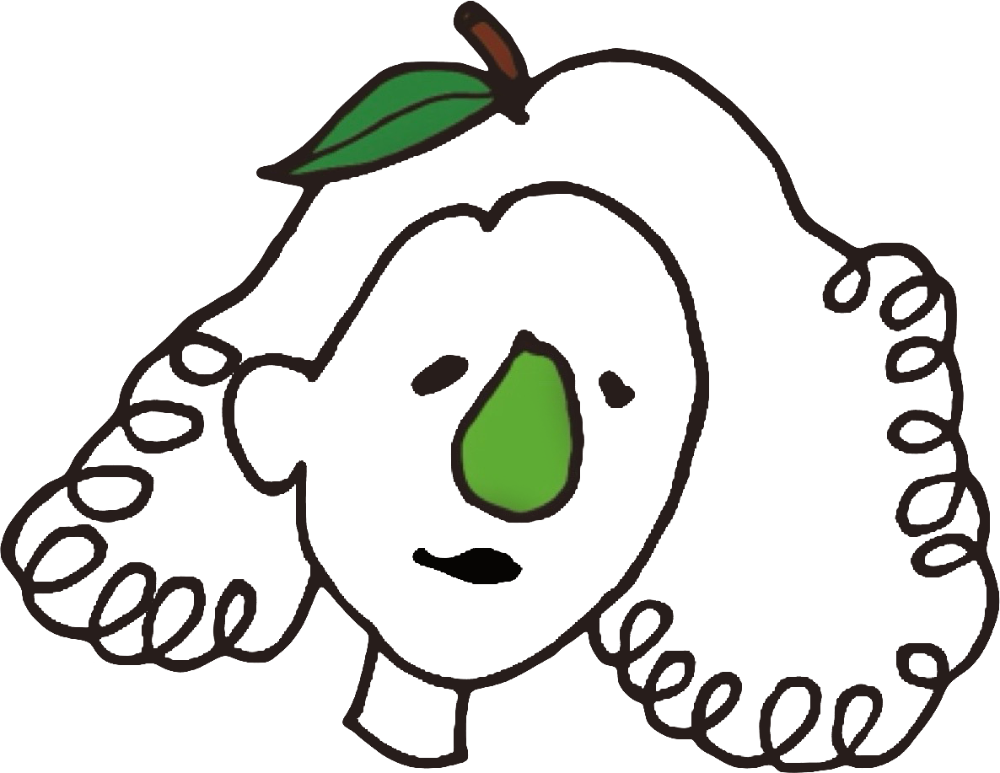

關於我們
瓜芭的故事在這裡！精心照料每一棵芭樂樹，期盼能獲得豐收。
果實滿樹的日子來臨了，成熟香脆的芭樂來到了瓜芭，以最新鮮的產品滿足每一位顧客的味蕾。
果實滿樹的日子來臨了，成熟香脆的芭樂來到了瓜芭，以最新鮮的產品滿足每一位顧客的味蕾。
關於瓜芭
從小家裡就是芭樂批發商，我平時的工作包括切割芭樂、篩選及分類。記得媽媽曾經說過，不會切就不要吃！這句話讓我練就了一身切水果的本領。因為從小就與芭樂為伴，我們的客人有時會驚訝地問：「你們家的芭樂每次買味道都一樣，是怎麼做到的？」其實，這全賴我們每次都非常細心地進行篩選和切割，正是這種堅持確保了我們芭樂的穩定和高品質。
